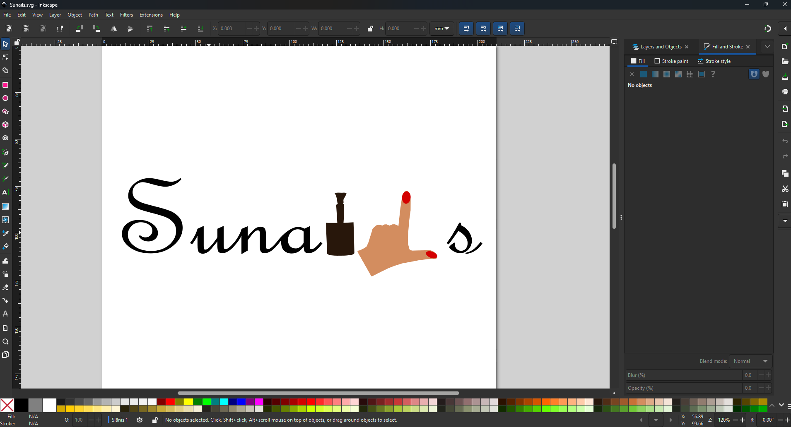
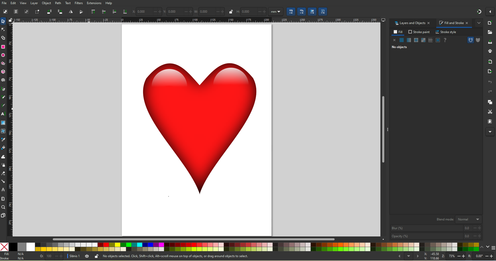
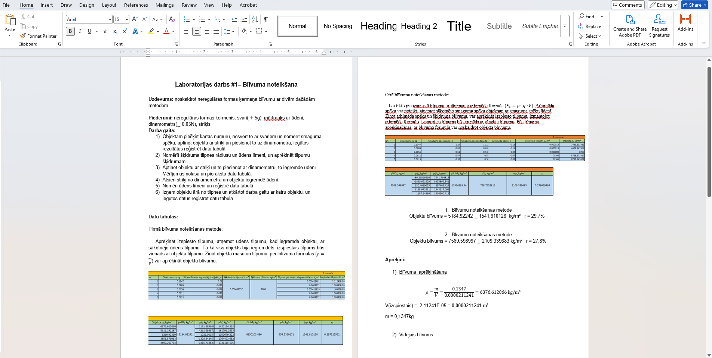
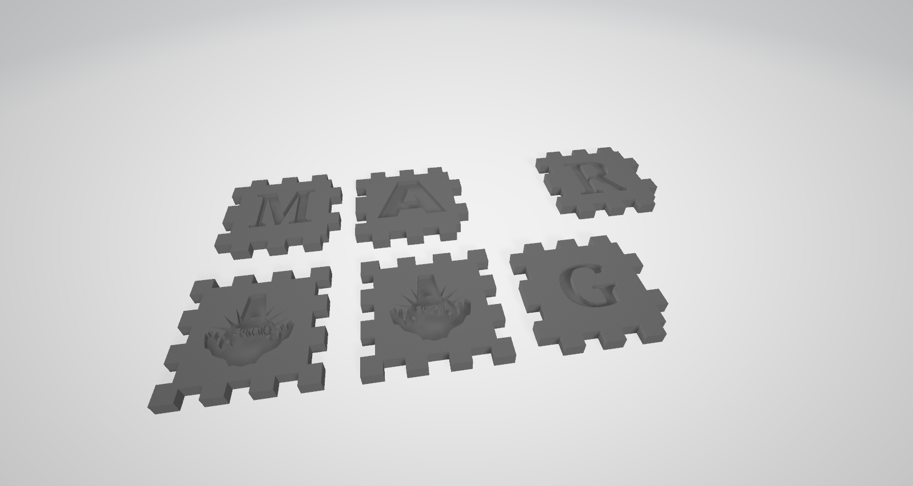

Labdien, šī ir skolēna Gustava Precinieka portfolio. Mācibu gada laikā tika apgūti vairākas datorprogrammas, kā Word, Excel, Gimp, Inkscape, video montēšana un 3d objekta modelēšana.
Rastra grafikā tika izmantots datorprogramma Gimp.
Rastra grafikā tika izmantots datorprogramma Inkscape.



Microsoft Word programmā var apgūt plašu dokumentu apstrādi: teksta ievadi un rediģēšanu, formatēšanu (fonti, rindkopas), stilu izmantošanu, tabulu un grafiku veidošanu, lapas izkārtojuma maiņu, kā arī dokumentu saglabāšanu dažādos formātos.

Šeit var redzēt izveidotā 3D kuba skaldnes.
Izklājlapas tika veidotas datorprogrammā Excel. Datorprogrammā Microsoft Excel var apgūt plašu prasmju klāstu — no vienkāršas datu ievades līdz sarežģītai biznesa analīze. Uzspiežot "Izklājlapa" var lejuppielādēt šī semestra izpildīto izklājlapu.
Izklājlapa